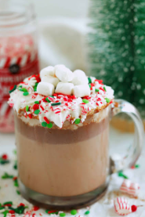

HotChocolate

Description
Classic Hot Chocolate is the ultimate cozy drink—a rich, velvety blend of real melted dark chocolate, cocoa powder, and warm milk that puts instant cocoa packets to shame. Unlike thin, overly sugary mixes, melting chopped chocolate directly into simmering milk creates a luxuriously thick, glossy texture with deep, complex cocoa flavour in every sip.
A tiny pinch of salt and a splash of vanilla extract elevate the chocolate notes, while a hint of cinnamon or instant espresso powder can be added for extra warmth. Ready on the stovetop in under 10 minutes, it is the easiest way to treat yourself on a chilly evening—especially when topped with a generous dollop of whipped cream, toasted marshmallows, or a dusting of cocoa powder.
Ingredients
- 2 cups full-cream milk
- 100g dark chocolate (60% to 70% cocoa), finely chopped
- 1.5 tablespoons unsweetened cocoa powder
- 1.5 tablespoons sugar or maple syrup (adjust to taste)
- 1/2 teaspoon pure vanilla extract
- A tiny pinch of salt
- 1/4 teaspoon cinnamon powder or instant espresso powder (optional)
- Whipped cream, marshmallows, or chocolate shavings, for topping
Steps
- Warm the milk: Pour the milk into a small saucepan and place it over medium-low heat until it begins to steam gently around the edges (do not let it come to a rolling boil).
- Whisk in the dry ingredients: Add the cocoa powder, sugar, salt, and cinnamon or espresso powder (if using). Whisk continuously until the cocoa powder dissolves completely without any lumps.
- Melt the chocolate: Lower the heat to its lowest setting and add the finely chopped dark chocolate. Stir constantly with a whisk or spatula for 2 to 3 minutes until the chocolate melts into a smooth, velvety liquid.
- Finish with vanilla: Remove the saucepan from the heat and stir in the vanilla extract. Taste and adjust sweetness if needed.
- Pour and garnish: Pour the hot chocolate into mugs, top with whipped cream, marshmallows, or chocolate shavings, and serve immediately.
Home